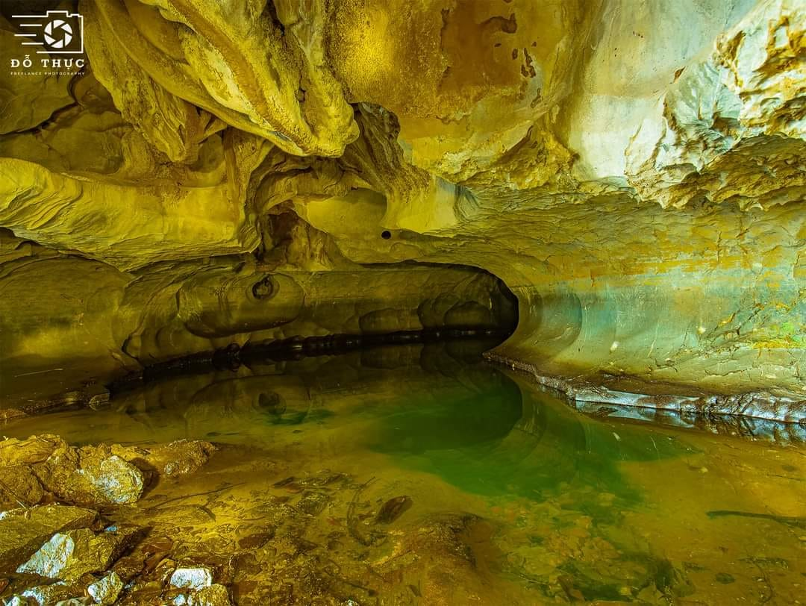
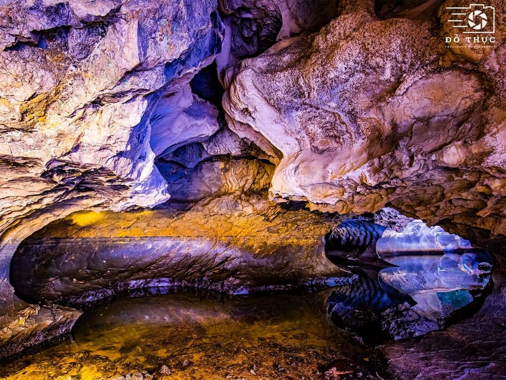

Phần 1: Vị trí địa lý và Sự hình thành kỳ ảo của hệ thống hang động
Moso nằm cách Hà Tiên 27km về phía Tây Nam, thuộc ấp Ba Núi, xã Bình An, huyện Kiên Lương, tỉnh Kiên Giang. Đây là núi đá vôi cao nhất tại núi Bãi Voi với độ cao 31m. Sở dĩ được gọi là Moso vì đây là tên gọi chung của những hang động được luồn thông nhau và có nhiều vách, ngõ ngách trong núi. Hang Moso cùng với núi Mây và núi Sơn Trà tạo thành cụm núi thuộc hệ thống núi đá vôi ở Kiên Lương. Về địa chất, Moso là núi đá vôi được hình thành do quá trình xâm thực từ hàng triệu năm trước. Hiện dấu vết còn lại ở hang Moso là những ngấn nước được ăn khuyết vào đá tạo nên những hố lớn và hang có hình dáng kỳ lạ thu hút du khách khi tới tham quan. Ngọn núi này có địa hình thấp và rộng khoảng 2.000m2. Trải qua thời gian nước biển và sóng xâm thực vào chân núi tạo thành nhiều hang động với lòng hang kỳ lạ và độc đáo.
Phần 2: Pháo đài thép và Trang sử hào hùng trong hai cuộc kháng chiến
Với địa thế hang động hiểm trở, Moso từng là căn cứ chỉ huy, là địa chỉ của các nhà hoạt động cách mạng trong thời kỳ kháng chiến chống Mỹ. Trong suốt giai đoạn kháng chiến chống thực dân Pháp từ 1945 - 1954, hang Moso là nơi đóng quân của Công binh xưởng 18 và là nơi cải tiến vũ khí của quân địch cho chiến trường Tây Nam Bộ.

Phần 3: Trải nghiệm thám hiểm và Vũ điệu Sếu đầu đỏ đặc sắc
Núi Moso có tất cả 20 hang động lớn nhỏ, trong đó nổi tiếng nhất là các hang gắn liền với cuộc chiến tranh như: Hang Điện Đài, hang Quân Y, hang Nước... Tất cả các hang đều thông với nhau, có nơi phình ra rất rộng với sức chứa lên tới hàng nghìn người. Để tham quan hang Moso, du khách cần có đèn pin tựa như đang đi thám hiểm vậy. Tại đây còn có dịch vụ hàng quán và hướng dẫn viên địa phương giới thiệu chi tiết cho du khách. Đặc biệt, nếu tới núi Moso tầm tháng 3 - 4 Dương lịch, du khách sẽ được chiêm ngưỡng những đàn sếu đỏ bay về tìm thức ăn và giao phối. Bạn sẽ được tận mắt chứng kiến những vũ điệu của đàn chim gọi nhau, tạo nên một khung cảnh thiên nhiên vô cùng ấn tượng.
